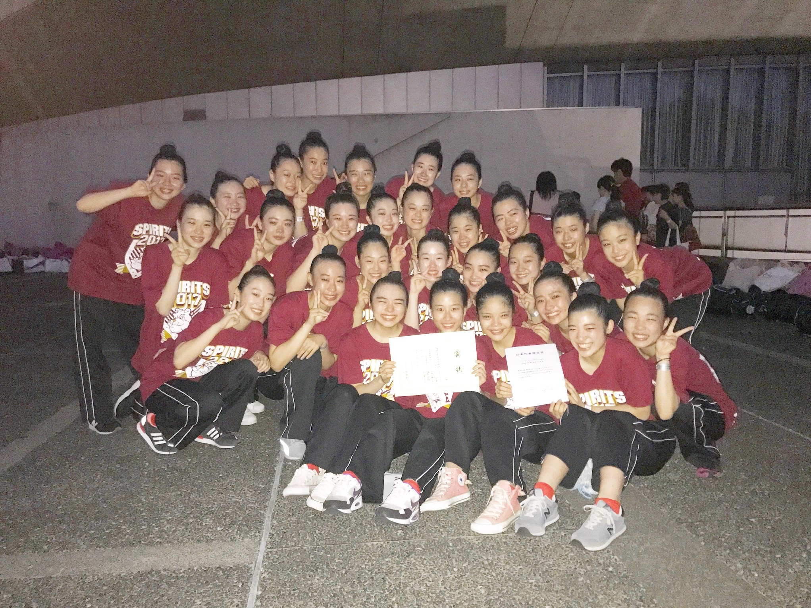

- Smile
- Power
- Intention
- Radiant
- Impress
- Try
- Spirits
田園調布学園バトン部 SPIRITSの部員で５年間活動し2017年のなでしこ祭公演で引退した最高なチーム!通称spi17
引退当時部員は28人で、幹部は部長 髙山詩央、副部長 鈴木真美、マネージャー 松浦百花、会計 松田真央の4人からなる。
引退当時部員は28人で、幹部は部長 髙山詩央、副部長 鈴木真美、マネージャー 松浦百花、会計 松田真央の4人からなる。
USA Regional 2016 東京大会 中学校編成Song/Pom-Large部門
第1位 USA Nationals 2016 進出
全国高等学校ダンスドリル選手権大会 Miss Dance Drill Team Competition 2016 関東大会
POM部門 Large編成 第3位
全国高等学校ダンスドリル選手権 大会 Miss Dance Drill Team Competition 2016
POM部門 Large編成 第3位 国際大会への出場権獲得
平成28年度ダンスドリル関東秋季競技大会 ソングリーダー部門Large編成
第4位 Dance Drill Winter Cup 出場権獲得
Dance Drill Winter Cup 2017 ソングリーダー部門Large編成 第5位
全国高等学校ダンスドリル選手権大会 Miss Dance Drill Team Competition 2017 関東大会
POM部門 Large編成 第2位
全国高等学校ダンスドリル選手権大会 Miss Dance Drill Team Competition 2017
POM部門 Large編成 第3位 国際大会への出場権獲得

第1位 USA Nationals 2016 進出
全国高等学校ダンスドリル選手権大会 Miss Dance Drill Team Competition 2016 関東大会
POM部門 Large編成 第3位
全国高等学校ダンスドリル選手権 大会 Miss Dance Drill Team Competition 2016
POM部門 Large編成 第3位 国際大会への出場権獲得
平成28年度ダンスドリル関東秋季競技大会 ソングリーダー部門Large編成
第4位 Dance Drill Winter Cup 出場権獲得
Dance Drill Winter Cup 2017 ソングリーダー部門Large編成 第5位
全国高等学校ダンスドリル選手権大会 Miss Dance Drill Team Competition 2017 関東大会
POM部門 Large編成 第2位
全国高等学校ダンスドリル選手権大会 Miss Dance Drill Team Competition 2017
POM部門 Large編成 第3位 国際大会への出場権獲得